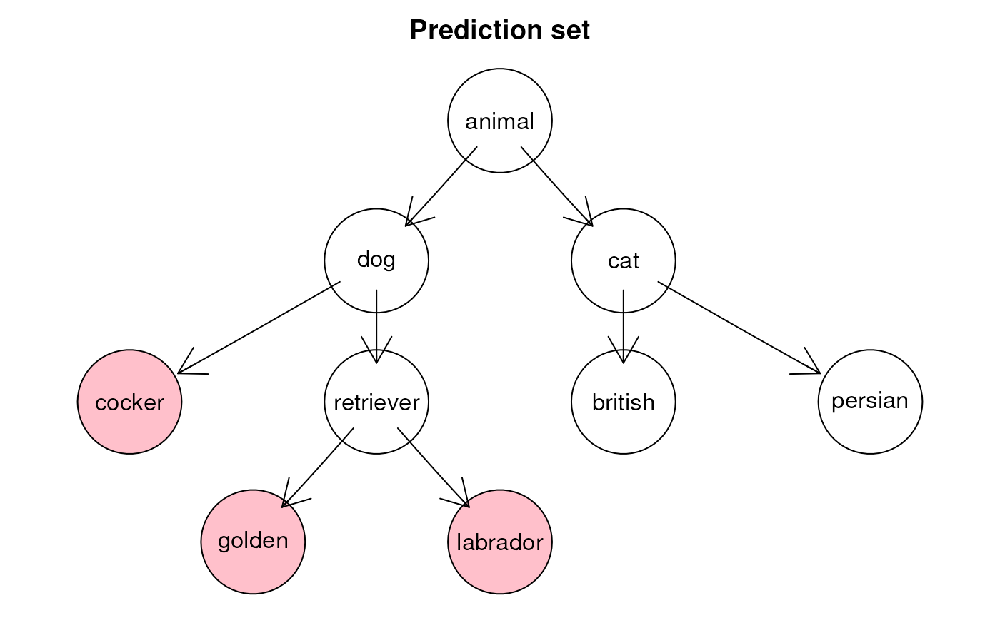

This function takes as input a prediction set and an ontology and plots the ontology, highlighting the labels included in the set.
plotResult(
pred_set,
onto,
probs = NULL,
col_grad = c("lemonchiffon", "orange", "darkred"),
attrs = NULL,
k = 4,
title = NULL,
add_scores = TRUE,
...
)character vector containing the labels in the prediction set
ontology as an igraph
estimated probabilities for the classes
color to use to highlight the classes
other grtaphical attributes
number of decimal digits to consider in probs
title of the plot
boolean. If TRUE, estimated probabilities are
added to the name of the classes
general commands to be sent to plot
a plot of the ontology with the considered classes colored
library(igraph)
#>
#> Attaching package: ‘igraph’
#> The following objects are masked from ‘package:stats’:
#>
#> decompose, spectrum
#> The following object is masked from ‘package:base’:
#>
#> union
# Let's build a random ontology
onto <- graph_from_literal(
animal-+dog:cat, cat-+british:persian,
dog-+cocker:retriever, retriever-+golden:labrador
)
# Let's consider this prediction set
pred_set <- c("golden", "labrador", "cocker")
plotResult(pred_set, onto,
col_grad = "pink", add_scores = FALSE,
title = "Prediction set"
)
